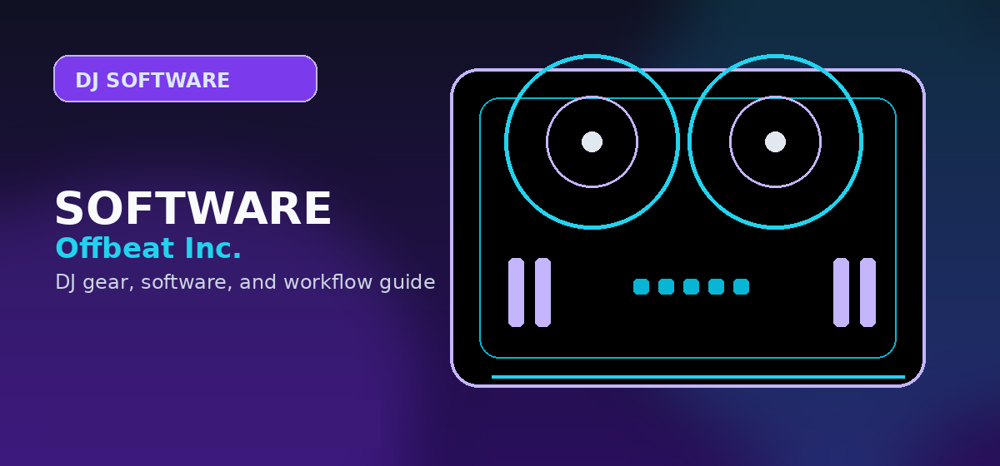

Best DJ Software for Vinyl Scratching 2026: Serato vs. Traktor DVS Setup Guide
Comprehensive guide to best DJ software for vinyl scratching 2026 Serato Traktor DVS setup with practical recommendations and current buying notes — updated 2026.

Disclosure: This page uses affiliate links. We may earn a commission at no extra cost to you. Full disclosure →
For the modern turntablist in 2026, the tactile satisfaction of vinyl scratching remains irreplaceable, but the versatility of digital libraries is mandatory. Enter the Digital Vinyl System (DVS), a bridge that allows you to manipulate digital files using actual timecode records. Achieving a "zero-latency" feel is the holy grail of scratching; if there is even a millisecond of lag between the platter movement and the audio output, the performance feels disconnected. Whether you are a battle DJ or a hybrid performer, your choice between Serato and Traktor defines your workflow. This guide breaks down the top software contenders and the critical hardware required to build a professional DVS rig that maintains the raw energy of wax with the precision of 2026 digital processing.
The Industry Standard: Serato DJ Pro for Scratching
Serato DJ Pro remains the undisputed champion for scratch DJs. Its dominance is rooted in its exceptional latency management and a "feel" that most closely mimics analog vinyl. In 2026, Serato's integration with hardware is seamless; most professional battle mixers are "Serato Official," meaning they are plug-and-play without needing a separate audio interface. For the scratch artist, Serato's "Flip" and "Pitch 'n Time" expansions are essential, allowing for rapid-fire sample triggering and time-stretching without altering the pitch.
The Powerhouse: Traktor Pro 4 and the DVS Ecosystem
While Serato owns the battle circuit, Traktor Pro 4 is the preferred choice for the hybrid DJ and the experimental performer. Traktor's DVS ecosystem is renowned for its stability and deep customization. Unlike Serato's hardware-locked approach, Traktor is more flexible with a wider range of compatible audio interfaces. Its strength lies in its advanced routing and effect chains, allowing DJs to layer complex textures over their scratches. Traktor Pro 4 significantly improved its timecode tracking in 2026, reducing jitter and adding Stems integration for live sets.
The Essential Hardware: Choosing Your Audio Interface
The software is only as good as the audio interface routing the signal. For DVS you need multichannel routing to keep the timecode signal isolated from the master output, and phono preamps (or a dedicated phono pre) to amplify the cartridge signal. Two standout options:
Pro + budget: interface built into mixer, zero extra cables. Plug-and-play with Serato.
Search Rane Seventy Two DJ Mixer on Amazon →Budget option for hybrid setups. Pristine converters, low-latency drivers, 24-bit/96kHz.
Search Focusrite Scarlett 4i4 on Amazon →Setting Up Your DVS Rig: From Timecode to Mix
- Place timecode vinyl on each platter — these records encode a continuous high-frequency tone that the software reads as needle position + speed.
- Set mixer to Line input on the timecode channels so the signal reaches the interface at correct level (not phono).
- Connect interface via USB-C — 2026 setups use USB-C for high-speed data transfer; avoid USB hubs to minimize latency.
- Calibrate latency offset in software settings — spin the record and adjust until the audio playhead perfectly matches the physical needle position.
- Load your track — the software replaces the timecode tone with your digital file. Scratch any MP3 or WAV as if it were pressed to 12-inch wax.
2026 DVS Comparison Table
| Feature | Serato DJ Pro | Traktor Pro 4 |
|---|---|---|
| Scratch Latency | Ultra-Low (Industry Best) | Low (Very Stable) |
| Hardware Setup | Plug-and-Play (Official Gear) | Flexible (Wide Interface Range) |
| Best For | Battle DJs / Pure Scratching | Hybrid DJs / Electronic Sets |
| Key Strength | Intuitive "Feel" & Flip | Advanced Routing & FX |
| Est. Software Cost | $249 (Pro) / Subscription | $129 - $199 |
| Recommended Gear | Rane Seventy-Two ($1,500) | Traktor Kontrol S4 ($1,200) |
Quick Verdict
Choose Serato DJ Pro if you are a dedicated turntablist. Its superior latency and industry-standard integration with battle mixers make it the only real choice for professional scratching.
Choose Traktor Pro 4 if you are a hybrid performer. If you blend scratching with live looping, complex effects, and a variety of audio interfaces, Traktor offers the flexibility and stability you need.
Whether you choose the surgical precision of Serato or the expansive power of Traktor, the right gear is the difference between a muddy mix and a club-ready performance. Ready to upgrade your rig? Check out our curated list of the best 2026 DVS-compatible mixers and interfaces via the affiliate links below to get the lowest current pricing.
Shop on Amazon
Browse Serato and Traktor DVS interfaces on Amazon — from budget to pro.
Buyer Checklist Before You Purchase
Before completing your purchase, run through this checklist to confirm you have considered all the relevant factors:
- Check current pricing on Amazon, Sweetwater, and the manufacturer's own site — prices vary and retailer sales can save 10-20%
- Verify compatibility with your existing software and operating system (especially important for audio interfaces and DJ controllers)
- Read the most recent Reddit r/DJs posts for the specific model to catch any reliability or firmware issues not in formal reviews
- Confirm warranty terms — Sweetwater provides a 2-year warranty on most gear at no extra cost, often worth the slight price premium
- Look for bundle deals — some retailers include cables, software licenses, or accessories that add significant value
The products recommended above have been selected based on editorial research and user feedback across multiple communities. Always read the most recent user reviews before purchasing, as product quality and support can change with manufacturing revisions.
Alternatives Worth Considering
The products on this list represent the strongest options in each category, but the market changes regularly. If none of these quite fit your needs, consider exploring:
- One tier up or down from your budget — sometimes a $50 difference puts you in a significantly better product tier
- Open-box and used options — DJ gear depreciates quickly; factory-certified refurbished units from authorised dealers offer significant savings
- Last year's model — manufacturers typically update their entry-level line annually; the previous generation is often available at a deep discount with near-identical performance
Pro Tips Before You Decide
- Use free trials fully — spend the entire trial period on the specific workflow you plan to use long-term, not just exploring features
- Check recent reviews — software and gear receive regular updates; look for reviews or Reddit posts from the last 3-6 months
- Budget for accessories — cables, stands, carrying cases and replacement pads/needles add 10-20% on top of the main purchase price
- Join the community early — getting active in subreddits and Discord servers before purchasing gives you direct access to current owner feedback
- Plan your setup holistically — whichever product you choose, make sure it integrates cleanly with the rest of your gear and software ecosystem
Frequently Asked Questions
What is the best DJ software for vinyl scratching in 2026?
Serato DJ Pro is the industry standard for vinyl DJs. Its timecode vinyl support is the most stable, its scratch algorithm is the lowest-latency, and most professional scratch DJs (DMC competitors) use it. Traktor Pro 3 with Timecode Vinyl is the closest alternative, favored for its effects routing.
Do I need special vinyl to use DJ software with turntables?
Yes — you need timecode vinyl, not standard records. Serato Timecode Vinyl (black) and Traktor Vinyl (gold/silver) each encode proprietary timecode signals that tell the software the needle position and speed. You use one timecode record per turntable, and the software maps the timecode to your digital track.
What audio interface do I need for vinyl DJing with software?
You need an audio interface with phono preamps — or a separate phono preamp — to amplify the cartridge signal to line level before it reaches your DJ software. Rane's hardware controllers include built-in phono inputs. The Native Instruments Audio 10 and Traktor Scratch A6 are purpose-built for timecode vinyl setups.
Can I use any turntable with Serato DJ Pro?
Yes, any Direct Drive turntable works with Serato. The Technics SL-1200MK7 ($1,299), Audio-Technica AT-LP1240-USBXP ($349), and Reloop RP-8000 MK2 ($699) are popular choices. Belt-drive turntables are not recommended — motor drift causes timecode signal instability that degrades tracking accuracy.
Is mixxx good for vinyl scratching?
Mixxx (free, open-source) supports vinyl control / timecode, but its timecode tracking is less stable than Serato or Traktor. For practice, Mixxx is fine. For professional gigs or competitions, use Serato DJ Pro or Traktor Pro 3 — the latency and reliability difference matters when scratching live.